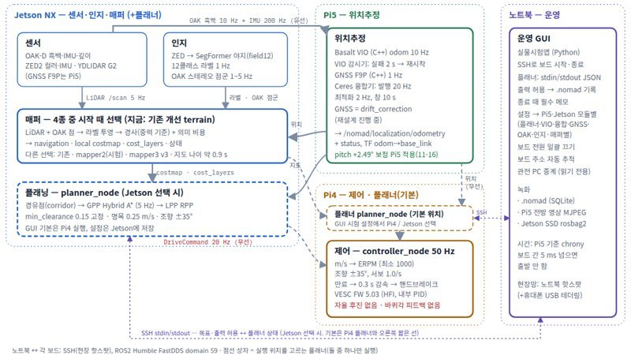

홈 › 시스템 구조
시스템 구조
로봇 소프트웨어가 보드별로 어떻게 나뉘고, 데이터가 어떻게 흐르는지.

전체 시스템 구조 (11/17 갱신)센서 → 위치(VIO + 융합기) → 인지 → 매퍼 4종 → 플래닝(기본 Pi4, Jetson 선택) → 제어(Pi4) → 운영. 블록을 누르면 파트별 처리 순서·확정값·최근 변경·문제. 맨 아래 로드맵·11/16 개선
GUI·보드 개선 (11/16)매퍼별 설정(경계 px·초기 안전영역·경사 k), 모듈 세부 설정(VIO·융합·GNSS·OAK·인지), 보드 전원 일괄 끄기(실사용 성공), 종료 정리·목표 x·y 입력·Wi-Fi 절전 끄기, 주행기록 올리기 수정(.part 24개 복구), VIO pitch +2.49° 보정. 표시 없는 항목 일부는 실차 미확인
보드 코드 읽기 — 데이터 흐름과 예외 처리 (11/11~13)보드별 모듈·토픽, 끊김·재시작 처리 F1~F20
새 매퍼 구조 탐색 (11/13)새 매퍼(mapper2) 설계와 VIO·플래너 레벨. 지금은 개선 매퍼를 씀
경사 지도 비교 (10/28)경사 추정 개선 비교
앞으로의 목표
지금: Pi5 VIO·VIO+GNSS 융합·GNSS 수신 / Jetson OAK·ZED·LiDAR 센서, 의미분할 인지, 매퍼 4종(기존·기존 개선 terrain·새 매퍼 mapper2 시험용·새 매퍼3 v3) / Pi4 제어기(RPM·서보 → VESC) / 플래너(GPP Hybrid A* + LPP)는 GUI에서 실행 위치를 고름: 기본 Pi4, Jetson 선택 가능, 설정은 Jetson 저장 / 노트북 GUI 기동·종료·상태·목표·출력 허용, 기록·다시보기, 관전 중계. 현장망은 노트북 핫스팟(휴대폰 USB 테더링으로 인터넷 함께).
| 단계 | 내용 | 상태 |
|---|---|---|
| 1 | 시험 초기화 버튼 | 계획(미구현) — 지금은 VIO 재실행·지자계 방향 초기화·제어기 복구만 |
| 2 | 플래너 Jetson 실행 + GUI 파트별 설정 | Jetson 실행 가능·GUI 설정 완료, 기본 전환 미완(기본 Pi4) |
| 3 | VIO(Pi5) 설정·초기화 GUI | 11-16 모듈 세부 설정으로 완료 |
| 다음 | VIO+GNSS 융합기 재설계 | 진행 중(시험판 빌드 중) |
| 최종 | 로직 개발이 끝나면 Pi4를 빼고 제어기를 Jetson으로 → 보드를 Jetson + Pi5 두 대로 | 계획 |